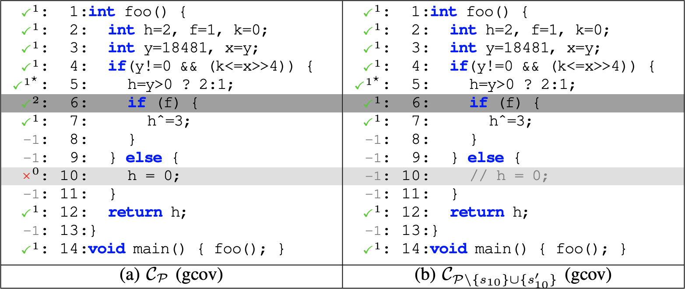

public: True class: center, middle # 系统编程与基础设施 蒋炎岩 <jyy@nju.edu.cn> 南京大学计算机软件研究所 --- # 概述 > 感受到PA的恶意了吗？ > > * 不就是写几行代码么，怎么……怎么写不对啊…… > * 这就是为什么PA要搞那么麻烦：又是Makefile，又是各种项目/工具 > * 没有.red[基础设施]，PA的完成率会大幅降低 ---- * 开发/调试的基础设施 * Differential testing * 系统编程：基础设施 --- class: center, middle # 开发/调试的基础设施 --- # 你们是怎么写程序的？ 虽然很多同学已经配置好了良好的编程环境，但依然有很多同学 “.red[面向浪费时间编程]” * yzh 推荐 vim/tmux 的原因是大家用 IDE 容易迷失自我 (关注表象，而不知道内在是如何工作的) * 在你搞清楚的前提下，也可以解放自我 ---- ```text $ gcc a.c a.c: In function ‘main’: a.c:5:1: error: ‘a’ undeclared (first use in this function) $ vi a.c $ gcc a.c $ ./a.out 1 2 // 你输入的 zsh: segmentation fault (core dumped) ./a.out ... ``` --- # 基础设施的本质 通过适当的配置、脚本减少思维中断的时间，提高连贯性，保持短时记忆活跃 * `make` (fresh build) → 4s，已被打断 * `make` (parallel) → 0.5s ---- 基本原则：.red[如果你认为有提高效率的可能性，一定有人已经做了] * 每次都 `make -j8`? * 或者 `alias make='make -j8'` * 在 Makefile 里加一行 `MAKEFLAGS += -j 8` (better) --- # 心态分析 本质上，这些都不是难事，STFW 随手即来，但大家通常做不好 * 尚未 GET STFW 的技能 * 建议：在 hosts 中屏蔽百度; 修改默认搜索引擎; ... * 惰性 * 键入 `make -j8`: 增加 1s 时间 * STFW: 至少需要几分钟，而且有不少失败尝试 (短期收益是负的，尤其是上课 workloads 已经很重的前提下) * 克服惰性可以使你快速成长 --- # 心态分析 (cont'd) 在很多小事上，可能并不带来显著的收益 * 每次键入 `make -j8` 可能并不显著缩短 PA 完成的时间 * 但久而久之成为习惯，你就总是.red[想着改进基础设施] --- class: center, middle # Differential Testing --- # 复习：测试/调试的理论 Fault → Error → Failure ---- 对于 PA 来说，failure 是显而易见的： * Segmentation Fault 了，fail * HIT BAD TRAP 了，fail * 马里奥/仙剑不能跑嘛，fail 我已经调了很久了，但就是找不到那个导致 error 的指令啊😱😱😱 ---- 调试理论没有告诉大家：怎样.red[找到 error 发生的位置]？ --- # 怎么办 (不借助他人版本)？ <br/> <br/> <br/> # .center[.red[挫]] # .center[.red[败]] --- # 抱大腿：想法 如果学长/同学已经有一份正确的代码，能不能借助这个代码快速诊断出自己代码的问题？ * 同学们是非常智慧的，在 ICS-PA 创立的初期发明了替换调试法 * PA 是分模块实现的 (若干个 `.c`) * 从大腿同学的代码开始，逐个替换进自己实现的 `.c` * 第一个替换进的文件里有 bug ---- .blue[Cool!] * 可能的改进：以函数级进行替换等等 --- # 抱大腿：建立基础设施 当然，我们可以做得更好： * 只需要大腿的 compiled binary * 指令级定位出错的位置 ```python for i in range(int(sys.argv[1])): # Life is short print("\n".join(["si"] + # You need python [f"p %{r}" for r in ["eax", "ebx", ...]])) ``` ---- 然后就可以实现“对比”： ```bash diff() { # 使用 diff 进行二分查找 python3 cmdgen.py $1 | ./build/x86-nemu -b -l 1.log img; \ python3 cmdgen.py $1 | ./x86-nemu-datui -b -l 2.log img; \ (diff -q 1.log 2.log > /dev/null && echo "Pass") || \ echo "Fail" } ``` --- # 这就是Differential Testing “.green[同一套接口 (API)] 的.green[两个实现]应当行为完全一致” * NEMU 中，这个接口是指令；我们找到第一个行为不同的指令 * 你们想想有什么.red[现实中软件系统]的例子？ -- count: false ---- Differential testing 是 real research (excited🏅) * 浏览器 [Mesbah and Prasad, ICSE'11](https://dl.acm.org/citation.cfm?id=1985870) * GCC (vs clang), [Yang et al., PLDI'11](https://embed.cs.utah.edu/csmith/) * 文件系统, [Min et al., SOSP'15](https://dl.acm.org/citation.cfm?id=2815422) * Gcov (vs llvm-cov), 我们的工作! * 潜在/已有的一些研究：debugger, OS API (Windows Subsystem for Linux), 数据库... --- # Self-Validation of Coverage Profilers “自己和自己做 differential testing” (ASE'19) * 改变未执行的代码，其他部分的代码覆盖率统计应该不变 * 变了说明代码覆盖率统计有问题 .center[] --- class: center, middle # 实现 Differential Testing --- # 原理 刚才我们已经给大腿的代码实现了一个简单版本的 diff-testing 我们还有.red[真正的大腿]：QEMU & gdb * ICS PA = 缩水版 QEMU * monitor = 缩水版 gdb 实际上 PA 就是简化 (教学) 版的 QEMU/gdb -- count: false ---- diff-testing 又恰好是一个和.red[外部世界打交道]的故事 * 以前我们一直都只是自己写自己的程序，调用库函数 * diff-testing 也许是你们第一次见到和其他程序 (QEMU, gdb) .red[协作/交互]的程序 --- # 原理 (cont'd) ```bash # diff-stream: 在第一个不同的输出上停止 # gen-cmds: 不断生成 si; p $eax; p $ebx; ... diff-stream <(gen-cmds | nemu-1) <(gen-cmds | nemu-2) ``` ---- 改进版的 “抱大腿” 代码，不需二分查找 * 同时启动两个 NEMU (QEMU) * 在第一个输出不同时停止 --- # 原理 (cont'd) 问题分析：我们需要使 QEMU 像 NEMU 一样执行指令！ * QEMU 实现了 gdb 的协议 * 协议格式同 monitor ---- qemu-diff 实现： 1. 启动 QEMU 并配置它进入与 PA 类似的模式 2. 用 gdb 连接 QEMU 3. 用 `gdb_si()` 在 QEMU 中执行一条指令 4. 比较指令执行后寄存器是否有区别 --- # 代码导读 首先 PA 代码 (`src/`) 里.red[没有] diff-test 的实际代码，只有一堆函数指针： ```c static void (*ref_difftest_memcpy_from_dut)(paddr_t dest, void *src, size_t n); static void (*ref_difftest_getregs)(void *c); static void (*ref_difftest_setregs)(const void *c); static void (*ref_difftest_exec)(uint64_t n); ``` 这些函数封装了参考实现的功能 * 既可以和 QEMU diff-test，也可以和 NEMU diff-test * `exec_wrapper()` 中执行.red[一条]指令之后直接对比结果就行 ```c #if defined(DIFF_TEST) difftest_step(ori_pc, cpu.pc); #endif ``` --- # 代码导读 (cont'd) 经过 RTFM/RTFSC： * `nemu/tools/qemu-diff` 是 differential testing 实际实现的目录 ---- 然后RTFSC，看到了若干有用的函数： * `gdb_connect_qemu`，看起来就是用来连接到 QEMU 的，创建一个到 127.0.0.1、端口是 1234 的 gdb 连接 * `gdb_si`，和 monitor 一样，单步执行指令 * `gdb_setregs`, `gdb_getregs`，好像复杂一点，不过就是用 `gdb_send()` 和 `gdb_recv()` 发送/接收消息 --- # 代码导读 (cont'd) 主要的实现还是在diff-test.c中 * 阅读这些代码的时候会遇到一定的困难，.red[怎么办呢]？ * 遇到不明白的函数，查手册/读代码 ---- diff-test 流程 * 动态链接库被加载 * diff-test 初始化，加载 MBR，启动 QEMU 和初始化进入保护模式 * diff-test 调用 `ref_difftest_memcpy_from_dut(ENTRY_START, guest_to_host(ENTRY_START), img_size);` 同步镜像 * 之后每执行一条指令都会把寄存器现场从 DUT 复制到 REF --- # diff-test 的局限 Differential testing 也不是绝对万能的 -- count:false * 如果你是第一个实现模拟器的…… * 心疼第一届做实验的同学 * 对比 memory 的代价太大，选择忽略 * 如果错误的内存很久之后才使用，会给 debugging 带来一些困难 * 解决方法：增加 taint analysis * 无法检测配置错 --- class: center, middle # 系统编程：基础设施 .red[机器永远是对的] .red[未测代码永远是错的] 你们感受到了吗？ --- # 系统编程的困难 在程序规模到达一定程度的时候，代码既难管理，也难写对 * 即便在项目文件之间浏览就已经非常耗时 * 面对不熟悉的模块/API * 需要好的 IDE、代码折叠、第二块屏幕…… * 编程经验可以.green[减少] bug，但很难完全.red[消灭]它们 * 各类肉眼难以发现的低级错误 (`i` vs. `j`, `0x` vs `0b`, `int` with `unsigned`, ...) * 读错了手册 (忘记更新某个 flags, 记错 0/符号扩展, ...) * 逻辑上的错误 (使用一块已经释放的内存, 虚拟/物理内存地址访问错, ...) ---- 做过 PA 的人就知道，“机器永远是对的”不是开玩笑的 * 你折腾一天，两天，可能就是多打了一个空格 --- # 基础设施：帮助你更快更好地生产代码 终极梦想：让计算机自动帮我们写程序 * 告诉计算机需求 → 计算机输出正确的代码 * 计算机科学的 holy grail 之一 ---- 现在我们还在软件自动化的初级阶段 * 计算机只能提供有限的自动化 (基础设施) * 集成开发环境 (IDE) * 静态分析 * 动态分析 * 但这些基础设施已经从本质上改变了我们的开发效率 * 你绝对不会愿意用记事本写程序的 --- # 基础设施 当我们大规模软件工程实践遇到困难的时候，我们要去.red[找轮子] * (日常管理) 效率低 → .red[熟练使用命令行工具/Python] * (项目管理) 你已经会 `gcc a.c`了，但没法管理几十个文件 → .red[make]，实现.green[一键编译]、.green[一键运行] * (代码编辑) 在代码里跳来跳去很麻烦 → .red[IDE/配置Vim/装插件] * (错误检查) 很容易犯低级错误 → .red[-Wall -Werror] * (代码调试) Segmentation Fault了 → .red[gdb] ---- 不夸张地说，使用/不使用正确的工具，效率可以差.red[几十到几百倍] * 走上人生巅峰 (轻松挑战更有难度的任务) vs. 毕业困难 (无法完成课程作业) --- # 基础设施：程序分析 (Program Analysis) 静态(程序)分析：分析.red[源代码]证明/推断/模拟执行程序 * 编译器 (-Wall -Werror)/优化 * linter 代码风格检查 * FindBug：各种基于 bug pattern 的检查，比如缓冲区溢出 ---- 动态(程序)分析：分析/控制.red[程序执行] (trace, log, …) * gdb (帮助你分析程序执行) * diff-test (对比两个程序的执行) * perf 性能工具 --- # 基础设施：小结 当轮子都不够用的时候，我们就去.red[造轮子] * 调试困难，有参考实现 → .red[diff-test] * 难以贯通多门实验课 → .red[AbstractMachine] -- count: false ---- 轮子还不够用呢？ * diff-test 每秒只能检查 ~5000 条指令 * 中断和 I/O 具有不确定性 * 没有参考实现呢 → .red[real research]